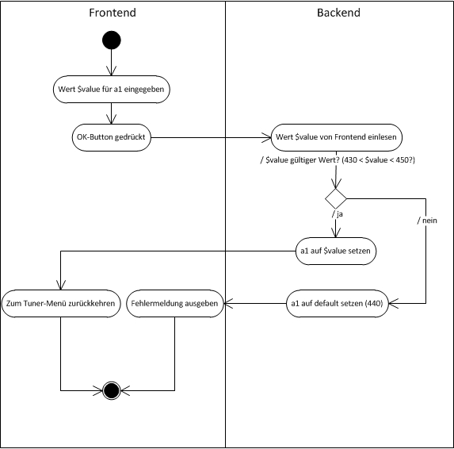
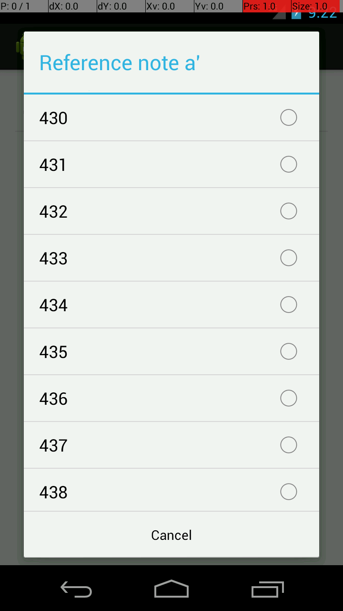

BPM
Use Case Specification: customizeA1
Version 1.0
Revision History
|
Date |
Version |
Description |
Author |
|
<29/Okt/13> |
1.0 |
Ersterstellung |
Mario W., Benedikt B. |
|
|
|
|
|
|
|
|
|
|
|
|
|
|
|
Table of Contents
Use-Case Specification:
customizeA1
Instrumente werden zu einem Referenzton gestimmt. Dieser Referenzton ist das sog. a' (gesprochen: eingestrichenes a). Der Benutzer passt diesen Ton auf sein Instrument an.

N/A
Das Menü um a' anzupassen wurde aufgerufen.
N/A
Feature: customizeA1
In order to change the value of a1
As a musician
I want That a1 is changed
Scenario: As a user I can change the value of a
Then I press the menu key
Then I press "Settings"
Then I press "Reference note a'"
Then I see "450"
Szenario: Incorrect value was typed in.
Given The tuner-module is started
And the value 600 was typed in
When the OK-button is clicked
Then the value of a1 is set to default (440)
And "wrong value" is displayed.
